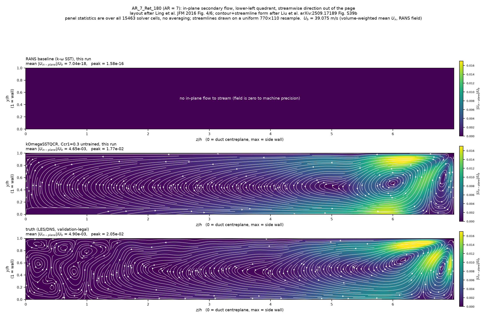

Public benchmark · ML for RANS turbulence modelling
The closure challenge
Turbulence is the last big unsolved problem in engineering fluid dynamics. The cheap
simulation every engineer runs gets the flow systematically wrong in the places that matter most.
This is the public benchmark that measures who can fix it — and it is deliberately designed to be hard.
UNSUBMITTEDRANK 1 OF 7 — SCORED LOCALLY, LIVE BOARD 2026-08-11
Our entry of record scores 0.0566 — the best overall number on the board as of benchmark
commit deb91557, scored on our own hardware by the benchmark's own unmodified code. That is
a local scoring, not an official placement: nothing has been sent to the benchmark steward, we are
not on the leaderboard and hold no rank, and if the steward's own scoring differs from ours, the
steward's number is the number.
THE BOARD MOVED ON 2026-08-11 AND THIS SECTION IS CORRECTED, NOT REWRITTEN. Fetched
live that day by two independent routes, the public leaderboard carries six entries and a
new leader, Yang at 0.0580. The eight case columns are unchanged, so the scores stay
like-for-like. Our 0.0566 is still the lowest overall on it; our margin over Yang is
0.001365, not the 0.002878 over Reissmann quoted below — less than half. The
benchmark commit deb91557 named above is the frozen commit we score at, and it
is deliberately not moved: it scores, it does not rank.
P(rank 1) = 50% — the probability that this placement survives a comparable set of
eight cases, from a 400,000-draw case-level bootstrap over the six-entry board. Eight cases cannot
pin it tighter than 0–97% at 95%, and the figure is never quoted here without that bound,
nor without the board it was computed against.
P(rank 1) = 68%, 2–100% at 95% — struck 2026-08-11: computed against a four-entry board
that no longer exists.
And the lead is not statistically decided against any of the four entries nearest us.
Our 0.001365 margin over Yang sits against a per-case spread fifteen times larger, we win
four of the eight cases against Yang and lose four, so on a different set of eight cases the
ordering could reverse; the same is true of Reissmann (0.002878, spread five times larger), of Wu
and Zhang, and of Tian, Buchanan, Hickel and Dwight. The margins over Liu and Montoya
do survive that test. The standing is three deletions wide — drop any one of
alpha_15_13929_4048, alpha_15_13929_2024 or
alpha_05_4071_4048 and the point rank falls to 2nd, 3rd and 2nd.
AR_1_Ret_360 and AR_3_Ret_360 are ties below the precision the board
publishes to, and are not per-case wins.
The best-on-board count fell with the board, and it fell further than the probability.The board-best number sits in our column on 4 of 8 cases — against the six-entry board it is
2 of 8, both alpha_15 hills lost to Tian, Buchanan, Hickel and Dwight. The two
that survive are exactly the two rows that are the organisers' own unmodified RANS field, which our
gate declined to touch — so the count belonging to our own model is zero of eight. Our model
is now best on no single case. The overall is a mean and not a count of wins, so 0.0566 remains the
lowest number on the board: this entry wins on consistency, not on peaks.
0.1036
where standard CFD lands
the industry-standard turbulence model, uncorrected. Our own measurement of it,
on the benchmark's scorer — the benchmark publishes no baseline figure of its own
0.0566
our entry of record
45.3% closer to reality than the standard solve — rank 1 of 7 on the live
six-entry board fetched 2026-08-11, scored locally, not an official placement; was 0.0654 until
round 5, §4. P(rank 1) = 50%, interval 0–97% at 95% on eight cases; the leads over Yang,
Reissmann, Wu and Zhang, and Tian, Buchanan, Hickel and Dwight are
not statistically decided, §5
0.0014
below the published leader
Yang's 0.0580 on the live board fetched 2026-08-11. 0.0029 below Reissmann's
0.0595 — struck the same day: the board gained two entries and a new leader. Read it with
the seed-uncertainty bound of up to 0.0024 attached, §5 — the bound is now 1.8× the margin,
and loading it adversely puts us second
6
scoring calls, ever
a discipline we set ourselves, not a benchmark limit — the benchmark has none and
tells entrants to preview their scores. Round 5's one call was accepted mechanically against a
criterion frozen before the call, §2 and §4
What the score is, in one line. Every test case is a real flow measured by
high-fidelity simulation. The benchmark picks 1,000 fixed points in each flow and asks: how far off is your
predicted velocity, on average, as a fraction of the true speed? 0.1036 means the standard solve is about
10% wrong. 0.0566 means we are about 5.7% wrong. Lower is better. The final score is the plain average
across all eight cases.
1 · What the benchmark actually asks for
Eight flows the standard model is known to struggle with — flow separating over hills,
flow in square ducts, flow over an aerodynamic bump. You are given a cheap, wrong simulation of each and
asked to predict the true flow field. You may use any method you like. There is exactly one strict
rule.
The one rule: you may not train or validate on any test case. The
benchmark states that a submission found to have done so is automatically withdrawn, with a note
placed on the leaderboard. The whole point of the benchmark is that the field is full of methods that
look good on the data they were built from and fall apart on anything else — so the test cases are
deliberately chosen to be a different Reynolds number and a different geometry from anything you trained on.
2 · Four rounds, one direction — and a refusal in every one of them
The score did not arrive in one clever step. It moved
0.0741 → 0.0676 → 0.0654 → 0.0566 across four scored rounds, and every step was bought by
paying for honesty in advance: each round left a known free improvement on the table, or put an
existing win at risk in writing, rather than let a test score choose what to submit.
Round
Overall
What moved it
What it refused
2
0.0741
first full trained correction across all eight flows
the 0.0066 answer-key shortcut, §3
3
0.0676
a blind decline gate withheld the correction where it hurt
took the honest route to 0.0001 behind the refused shortcut
4
0.0654
Reynolds-invariant duct features fixed a measured extrapolation failure
a +0.0022 regression on one duct, left standing rather than reverted by the answer key
5
0.0566
the untrained QCR physics term replaced the fitted duct correction, §4
a best-on-board tie put at risk in writing before the call — lost, and left standing
The ledger, and how the last call was authorized. Six scoring calls, ever:
the uncorrected floor, then rounds 1 through 5 — one call per prediction set, self-imposed; the benchmark
sets no limit and instructs submitters to preview their scores. Round 5's call was reserved to a designated
scoring agent, made only after four independent pre-score checks passed (the five unchanged files
hash-matched to the round-4 manifest, all eight files well-formed, the point-ordering proof re-run fresh,
the pre-registration's own hash table matched to the bytes on disk), and judged by a criterion committed
before the call existed: accept if and only if the overall beats 0.065438. It scored 0.056647.
The verdict was mechanical — no judgement was exercised after the number existed, and the rule that
decided what was in the submission had been frozen earlier still, before the first validation
iteration was ever run (§4).
3 · The part we are most proud of, and it cost us
Round 2 of our entry scored 0.0741. Then our own audit found something
uncomfortable: on three of the eight cases, our trained correction was making the answer
worse than not correcting at all.
The free 0.0066 sitting on the tableSimply switching the correction off on those three cases would have moved the score to
0.0675 — ahead of third place on the public board. One line of code. The catch:
we only knew which three cases to switch off because the benchmark had just told us our score
on them. Choosing what to submit by reading the answer key is exactly the leakage the one rule exists
to prevent. Our own audit wrote it down at the time: "taking that 0.0066 by inspection would
invalidate the entry."
We left it on the table and did it the long wayInstead of switching cases off by hand, we built a decline gate: a small model that looks
only at the cheap simulation itself — never at the answer — and predicts whether correcting this flow
will help or hurt. It was fitted on 21 training cases only, then checked
against 4 held-out cases it had never seen. It got all
4 of 4 right, including the one case where correcting genuinely hurt.
Then we froze it and let it decide, blindThe gate's threshold — 0.1263 — was locked before it was ever pointed at
a test case, and reproduced from training data alone to confirm nothing had drifted. Turned loose on the
four test flows using only the cheap simulation as input, it declined to correct exactly the two it
should have declined, and kept correcting the two it should have kept. 4 of 4, blind.
That round scored 0.0676 — one ten-thousandth worse than cheatingThe honest route landed at 0.0676. The shortcut we refused would have
given 0.0675. The gap is the third case, the NASA bump, where no legitimate
gate exists — so that small loss stays on our score permanently rather than being quietly reverted.
An entire extra round of work to arrive 0.0001 behind the number we could have simply taken.
That difference is the whole reason the result is worth anything.
Why this is the number that matters to an investor, not the score. Any team can
produce a good number on a benchmark by tuning against it until it looks right. That number tells you
nothing about whether the method will work on your aircraft, your valve, your car. What tells you
something is a team that finds a free improvement, can prove to itself that taking it would be cheating,
and declines — then builds the version that survives scrutiny and reports the slightly worse result.
The full account, including the fact that the idea for the gate came from a scoring call, is written
into the submission record itself so a reviewer finds it there rather than discovering it.
4 · Round 5: the ducts go to physics instead of a fit
The three square-duct flows were our worst family. The road to fixing them ran through
one public mis-diagnosis we corrected ourselves, one measured mechanism, and finally the decision to
stop fitting and put the physics inside the solver — under a shipping rule frozen before the first
validation run existed.
How round 4 got the ducts partly right, and where it hit the wall. We first
blamed the duct deficit on a genuine degeneracy in the model's inputs — and then killed our own diagnosis
with arithmetic: the same degeneracy holds in identical measure on the duct we win, so it could
not explain the ones we lost. The measured mechanism was simpler and worse: a gradient-boosted tree cannot
extrapolate — past its training edge it returns a constant — every duct the rules let us learn from sits at
a single Reynolds number, and two of the three test ducts sit at double it, pushing one input
1.85–2.07× past everything the model had ever seen. Round 4's Reynolds-invariant refit bought
0.0919 → 0.0811 and 0.0862 → 0.0775 on those two ducts — real, but still roughly double the leaders —
and no legal duct truth exists at the doubled Reynolds number, so a trained fix for the rest of
the gap could never be validated in advance. Full record: the duct feature-degeneracy and
Reynolds-transfer audits.
Round 5's move: a term with no training data has no training range. QCR2000 is a
constitutive correction published by Spalart in 2000 — one constant, 0.3, taken as published, fitted to
nothing, sitting inside the flow equations rather than bolted on afterwards. The claim was structural:
round 4's extrapolation failure cannot recur by the same mechanism, because there is no training
edge to walk off. But "cannot fail the old way" is not "cannot fail" — which is why every degree of
freedom was closed in writing before any solve ran. Two audit findings pushed the same direction: the
fitted correction restored the ducts' secondary-flow intensity while drawing the wrong
topology (one vortex where the truth has a counter-rotating pair), and its post-hoc fields
violated mass conservation at ~1015× the baseline solver's level, because a cell-wise
correction respects no conservation law.
The rule was frozen before the first validation iteration existedCommitted 2026-08-05, before any solve: QCR ships on all three test ducts or on
none, decided solely by the benchmark's own suggested validation duct — error ratio
≤ 0.70 of the standard solve's, secondary-flow correlation
r ≥ 0.85, both solves fully converged. The duct where we held a
best-on-board tie got no exemption: the freeze names it, says QCR may well be worse there,
and accepts the possible loss in writing — because protecting it per-case would mean choosing by a
known test score.
The validation duct passed every clauseRatio 0.4770, r 0.9284, both arms converged on
their own residual controls. Gate verdict: ALL. A usage-limit kill terminated the whole agent fleet
minutes after the freeze — and recovery was cheap precisely because the rule was already committed:
the test arms ran two days later under a rule that could not have drifted.
The submission was pre-registered before the one scoring callAccept criterion (beat round 4's 0.065438), expectation band
(0.059–0.0666) and the tie-loss risk statement all committed first. Only the
three duct files changed; the other five were copied byte-identical and hash-asserted. The test truth
files were never copied into the run tree — not merely unread; absent. Solver cost:
37 core-minutes against a 95-minute budget.
One call, mechanical verdict: 0.0566, acceptThe two doubled-Reynolds ducts — exactly where the extrapolation mechanism said the gain lived —
improved 0.0811 → 0.0455 and 0.0775 → 0.0400; the
in-range duct gave back +0.0029. Overall 0.056647
against the pre-stated criterion: accept, entry of record. It landed below the expectation band's best
end; the campaign's central arithmetic (match rank 2's duct scores ≈ 0.0563)
was nearly exact, and the band itself was mis-centred pessimistic. Recorded, not celebrated.
Dated 2026-08-14, not corrected — this whole item is the record of one scoring call made
2026-08-07, and the struck ordinal above is history, not a current claim. The campaign wrote that
arithmetic against the four-entry leaderboard frozen at benchmark commit
deb91557 (2026-05-04). The board has carried six entries since
2026-08-11T23:33Z — retrieved then, and re-verified unchanged by read-only fetch at
2026-08-14T21:01Z (campaign/BOARD_MOVED_2026-08-11.md, refetched in
campaign/BOARD_RESCORE_2026-08-14.md §1.2) — so that ordinal no longer names the entry it
named on 2026-08-07. Who it named, and where they stand on the live board, is stated with its frame in
the gold box below; it is deliberately not restated here, because a historical arithmetic
re-pointed at a live board would stop being the thing this item is a record of. The
0.0563 and the duct figures are unaffected: the eight case columns did not
change when the board grew.

Why the ducts moved: QCR draws the true counter-rotating corner-vortex pair where the
fitted correction drew one vortex. The validation duct's cross-section (lower-left quadrant, flow out
of the page). Top: the standard solve has exactly zero secondary flow — 10−16
of the bulk speed, machine zero, which is the structural blind spot the ducts are scored on. Bottom: the
truth has a counter-rotating vortex pair in the corner with two distinct centres. Middle: the untrained
QCR term reproduces that pair — same positions, same sense, same flanking high-speed wall lobes — at a
mean intensity of 4.65×10−3 of bulk against the truth's
4.90×10−3. Our round-4 fitted correction restored this intensity but drew
a single vortex in place of the pair. Visible deficit, stated: the truth's weak tertiary recirculations
near the centreplane (left of z/h ≈ 1.5) are smoothed into elongated lobes. This figure was declared a
reported diagnostic — not a gate clause — in the freeze, so it could not be recruited afterwards as a
post-hoc selector in either direction.
The pre-registered risk materialised, and we are volunteering it: the tie is
lost. Round 4 held a nominal 0.00003-level tie for best-on-board on the aspect-ratio-14 duct. The
freeze put that tie at risk in writing; the risk landed:
0.0325 → 0.0353 (+0.0029) and the tie is gone. the case falls to 3rd of 5, and our best-on-board
count drops 5 of 8 → 4 of 8 — struck 2026-08-15: both of those were four-entry-board figures
and both were live on this page, unstruck, for four days after the board moved. Against the
six-entry board retrieved 2026-08-11T23:33Z and re-verified unchanged by read-only fetch at
2026-08-14T21:01Z — the same board the box directly below this one already used — the aspect-ratio-14
duct places 4th of 7, and the best-on-board count is 2 of 8. And the count that matters is
smaller still: zero of the 8 belongs to our model. Both surviving rows
(alpha_05_4071_4048, alpha_05_4071_2024) are the organisers' own unmodified RANS
field that our decline gate passed through untouched, so anyone submitting that baseline unchanged scores
exactly the same on them, as §3 of this page already says in those words. It is not reverted: putting the old file back on that one duct after
seeing its score would be per-case selection on test outcomes — the same reason the round-2 shortcut and
the round-4 regression were left standing. The bundle was judged as a bundle, and the bundle wins:
−0.0731 combined on the two ducts that improved, against +0.0029 on the one that regressed.
Whose numbers the duct scores really are — and the check that proves it. Wu
& Zhang are rank 3 on the six-entry board retrieved 2026-08-11T23:33Z, re-verified unchanged by
read-only fetch at 2026-08-14T21:01Z (Wu & Zhang, the published rank-2 entry — struck
2026-08-14, see the note at the foot of this box). They run a model carrying
the same untrained QCR term. Our three duct
scores land within 0.0004 of theirs on all three ducts (0.0455 vs 0.0455, 0.0400 vs 0.0399, 0.0353
vs 0.0350) — independent solves, same constitutive term, same answer. So stated at its real size: the duct
signal is Spalart's 25-year-old published term, not a Certonomous invention, exactly as the decline
gate in §3 has published ancestors. What is ours is narrower and we claim only it: the measured diagnosis
that ruled the trained route out, the topology evidence above, and the frozen all-or-none rule that shipped
the term blind — including onto the duct where it lost us a tie.
Struck 2026-08-14 — and this is the second repair of this same claim, which is worth more than
the fix. “rank-2” was true of the four-entry board frozen at benchmark commit
deb91557 (2026-05-04), and it was repaired to that board on 2026-08-11. The live board gained
two entrants at 2026-08-11T23:33Z the same night, Wu & Zhang moved down the board, and the
repaired sentence was false again within hours of its repair. Every placement on this page now carries
which board and retrieved when on its face, and the placement itself is regenerated from
campaign/BOARD_MOVED_2026-08-11.md — re-verified by fetch in
campaign/BOARD_RESCORE_2026-08-14.md §1.2 — rather than retyped.
A physicality debt paid off in the same round. Our own audit had flagged that the
round-4 duct fields, being post-hoc cell-wise corrections, violated mass conservation with a divergence
~1015× the baseline solver's — a recorded cost of that method class. The QCR duct fields are the
output of a converged solve, so conservation is enforced by construction: measured through the identical
audit operator, their residual divergence is 27–63× lower than the fields they replace —
solver-consistency small, not model-structure large. The audit finding is closed for the duct family.
5 · Where the score actually stands
Stated plainly: as of benchmark commit deb91557, scored locally through
the benchmark's own unmodified scorer, 0.0566 is the best overall number on the board — 0.0014
below the published leader, Yang, on the six-entry board retrieved 2026-08-11T23:33Z and
re-verified unchanged by read-only fetch 2026-08-14T21:01Z. It is unsubmitted, so officially it sits
nowhere at all, and the seed-uncertainty bound is larger than that margin, not comparable to it
— 0.0024 against 0.0014 is 1.8× the margin, and its adverse end loses the point lead
outright, below.
0.0029 below the published leader … the margin carries a seed-uncertainty bound of
comparable size — struck 2026-08-15. 0.0029 was the margin over Reissmann, Fang &
Sandberg on the four-entry board, where the 0.0024 bound is 0.83× it and
“comparable” was fair. Reissmann is no longer the entry ahead of us. Against Yang the
margin is 0.001365 and the same bound is 177% of it — it does not cover part of the
margin, it exceeds it — so loaded adversely our overall is 0.059047 against Yang's
0.058013 and the lead is lost, not merely qualified. This page was giving two answers
at once: §0 above already said “our margin over Yang is 0.001365, not the 0.002878 over
Reissmann quoted below”, and this was the sentence it meant. The sibling page
benchmarks.html had the identical sentence repaired at commit cc906ec9 on
2026-08-14; that repair did not reach this one. Figures regenerated from
campaign/BOARD_RESCORE_2026-08-14.md §3 rather than retyped; docket D114.
P(rank 1) = 50% — 50.2% over a 400,000-draw case-level bootstrap of the eight scored
cases against the six-entry board fetched live on 2026-08-11. The
interval that matters is not the Monte Carlo one: a double bootstrap puts it at 0–97% at 95%,
which is what an eight-case sample can actually pin down, so the figure travels with that bound and
never without it — and never without the board it was computed against.
P(rank 1) = 68%, 2–100% at 95% — struck 2026-08-11: computed against a four-entry board
that no longer exists.The lead is not statistically decided against any of the four entries nearest us. Our 0.001365
margin over Yang sits against a per-case spread fifteen times larger (t = −0.19; we win four
of the eight cases and lose four), so on a different set of eight cases the ordering could reverse;
the same is true of Reissmann (0.002878, spread five times larger, t = −0.50), of Wu and Zhang
(t = −0.95), and of Tian, Buchanan, Hickel and Dwight (t = −1.03). The margins over Liu and Montoya
do survive that test. The standing is three deletions wide — drop any one of
alpha_15_13929_4048, alpha_15_13929_2024 or alpha_05_4071_4048
and the point rank falls to 2nd, 3rd and 2nd.
AR_1_Ret_360 and AR_3_Ret_360 are ties below the precision the board
publishes to, and are not per-case wins.
Public leaderboard — live, fetched 2026-08-11 (our own scoring is done at frozen benchmark commit deb91557, which scores but does not rank)
Overall
— · Certonomous, round 5
0.0566
UNSUBMITTED · RANK 1 OF 7 SCORED LOCALLY · NO OFFICIAL RANK · P(rank 1) = 50%, 0–97% AT 95%
1 · Yang
0.0580
new since 2026-08-10 — the new leader; our margin over it is 0.0014, and the lead is not statistically decided
2 · Reissmann, Fang, and Sandberg
0.0595
3 · Wu and Zhang
0.0624
4 · Tian, Buchanan, Hickel, Dwight
0.0641
new since 2026-08-10 — best on the board on three cases, two of them taken from us
5 · Liu, Wang, Zhao, and Xiao
0.0737
6 · Montoya, Oulghelou, and Cinnella
0.0779
Standard uncorrected simulation
0.1036
beaten overall by all seven — but not on every case
This table was four entries deep until 2026-08-11 and nobody noticed it move.
The eight case columns are unchanged, so every score above is like-for-like. The
frozen commit is deliberately not moved: a pin that is right for reproducing a score is
wrong for reading a standing.
Stability note (audited 2026-08-05, re-scoped for round 5): three of the eight
predictions — both steep-hill cases and the NASA hump, byte-identical since round 3 — come from a model
whose 327,600 training cells exceed the fitting library's binning subsample, making those predictions
genuinely seed-dependent. Retrained at eight seeds without touching test truth: the estimated seed
uncertainty on the overall is about 0.0003, but a
truth-free bound cannot rule out movement up to 0.0024
— 1.8× the 0.001365 margin over the published leader, Yang, on the six-entry board retrieved
2026-08-11T23:33Z. The rank-1 reading above does not merely carry that uncertainty; it does not
survive it — loaded adversely onto those three cases our overall is 0.059047 against Yang's
0.058013, which is rank 2 on the point score. The three duct predictions now contribute
zero seed variance: nothing in them was trained at all. Evidence:
closure_challenge_stability_physicality_audit.md;
campaign/BOARD_RESCORE_2026-08-14.md §3.
comparable to the 0.0029 margin over the published leader — the rank-1 reading above
must carry that uncertainty — struck 2026-08-15. 0.0029 was the margin over Reissmann,
Fang & Sandberg on the four-entry board, where 0.0024 is 0.83× it. Reissmann is no longer
the published leader, and against Yang the same bound is 177% of the margin, so
“comparable” understates it and “carries that uncertainty” understates the
consequence. Docket D114.
Case by case, against the best score any published entry has
achieved on that case — and, in the fourth column, against the untouched standard simulation the
organisers hand to every entrant. The board-best number sits in our column on 4 of 8 cases — two
genuinely ours, two the organisers' own baseline. Struck 2026-08-11: that count was measured
against the four-entry board. Against the live six-entry board it is 2 of 8 — both
alpha_15 hills lost to Tian, Buchanan, Hickel and Dwight — and the two that survive are
exactly the two organisers'-baseline rows, so the count belonging to our own model is zero of
eight. On the other six we are behind. The overall is a mean, not a count of wins, so 0.0566 is
still the lowest number on the board: this entry wins on consistency, not on peaks.
The fourth column below compares against the best of the four-entry board and
has not been re-derived against the six; against the six, the "best published" column would be lower
on six of the eight rows.
Test flow
Best published
Certonomous
Uncorrected
Periodic hill, steep, coarse
0.0592
0.0501
0.1320
OUR MODEL LEADS
Periodic hill, steep, fine
0.1195
0.1011
0.2049
OUR MODEL LEADS
Periodic hill, shallow, coarse
0.0569
0.0461
0.0461
BASELINE, NOT OUR MODEL
Periodic hill, shallow, fine
0.0760
0.0719
0.0719
BASELINE, NOT OUR MODEL
Square duct, aspect ratio 1
0.0387
0.0455
0.1288
2nd of 5 — was 3rd; ties Wu & Zhang at published precision
Square duct, aspect ratio 3
0.0341
0.0400
0.1243
3rd of 5 — 0.03998 against Wu & Zhang's 0.0399
Square duct, aspect ratio 14
0.0325
0.0353
0.0590
3rd of 5 — the tie for best, lost as pre-registered (§4)
NASA wall-mounted hump
0.0364
0.0632
0.0621
LAST — and worse than not correcting
The two rows marked "baseline, not our model" — and why we do not count them as
ours. On those two flows our submitted file is the untouched standard simulation. We checked
this rather than asserting it: the shipped prediction was re-derived from the organisers' own supplied
field and matches our submitted file to 5×10−10, which is the file's own write
precision. The gate withheld our model and passed the plain physics solve straight through.
0.0461 and 0.0719 are therefore not our numbers. They are properties of a file every entrant is
handed for free, and anyone submitting it unchanged scores exactly the same. This page once counted them
toward "five cases where we lead"; that was true arithmetic and misleading attribution, and both the
headline count and this table have carried the correction since.
What is genuinely ours there, stated at its real size. Cross the uncorrected
column against the full published leaderboard and something sharp falls out: on exactly two of the eight
test cases, every published entry is worse than doing nothing — and they are exactly the two our gate
declined. The gate was fitted on 21 training cases, validated on 4 held-out cases, and had never seen a
test case when it made those two calls. The claim we can defend is about the selection, not the
score: a train-only rule found, blind, the two flows on which the entire field of published methods
damages the answer. Knowing when not to act is the contribution. The two numbers it produced are not.
6 · What is not solved
The hump is still last, the duct numbers are borrowed physics, and the scientific question
that beat our trained model — transfer to a doubled Reynolds number — was routed around, not answered.
The NASA hump is our only last-place case, and the improvement we keep
refusing. No training data for the hump exists anywhere in the benchmark, and on it our correction
makes the answer worse than leaving it alone — 0.0632 against 0.0621. Submitting the untouched
solve there is one file copy, breaks no rule, and is worth about 0.00014 off the overall score
(0.05665 → 0.05651, arithmetic on our own recorded per-case numbers, not a new scoring call). We are not
taking it. The only reason to single out that one case is that the benchmark told us its score, and
choosing what to submit case by case from the answer key is the exact thing the one rule exists to stop.
That makes four refusals on the same grounds — the 0.0066 in §3, the round-4 and round-5 duct
regressions in §2 and §4, and this, the smallest of them. An improvement that comes from leakage is
worth less than no improvement, so the honest number stays on the board and this paragraph stays with it.
And the ducts are better, not solved. All three duct scores now sit within
0.0004 of the published entry that carries the same QCR term — and behind the leader on every one of them
(0.0387, 0.0341, 0.0325 against our 0.0455, 0.0400, 0.0353). The untrained term sets a strong floor; it
does not close the gap to Reissmann. And the question that actually defeated round 4 — how a trained
correction transfers to a Reynolds number the rules give no truth for — remains open: round 5 sidestepped
it with physics that has no training range rather than answering it. The ambition, stated as ambition and
not a plan of record: a hump route with the same frozen-rule shape, and a trained duct closure good enough
to beat the untrained term that just replaced it.
And the gate is not our invention. We checked. Before claiming the decline gate as a
contribution we searched for prior art properly, and found it — and it is two established things, not one,
so we name them separately rather than roll them together. Classifiers that read only the uncorrected solve and
identify where the baseline is unreliable are established: Ling and Templeton in 2015, who classify RANS
results point by point as high or low uncertainty and control nothing, and Wu, Wang, Xiao and Ling in 2017, an
a priori confidence measure. Using such a classifier to control where a data-driven correction is
fitted and applied is established separately: Steiner, Dwight and Viré in 2022, and Buchanan, Lăcătuş, West and
Dwight in 2025. Two of those authors wrote the benchmark we are entering. What is
left to us is narrow and we state it that way: our gate decides for a whole flow rather than cell by cell,
it is trained to predict the baseline's error rather than how unfamiliar the flow looks, and when it
declines it submits the plain uncorrected solve and says so. This is a recombination with a modification,
not a new method class, and every citation behind that sentence was fetched and checked rather than
recalled. The duct term carries the same honesty one section up: Spalart published it in 2000, and a
leaderboard entry already runs it.
And the honest bottom line. Of the eight predictions, three carry our trained
post-processing correction, two are the organisers' own untouched solve that our gate passed through, and
three are a fresh converged solve of a 25-year-old published turbulence term with nothing fitted to
anything. The entry has been measured on eight flows from one public benchmark. It has not been submitted,
has not been reviewed by anyone outside this lab, and holds no official rank — rank 1 of 7 entrants
counting us is our local scoring at a pinned benchmark commit, with a seed-uncertainty bound
larger than its margin: 0.0024 against 0.001365 is 177%, and its adverse end loses the point lead.
Everything above is reproducible from the records in this repository, scored by code we did not write.
rank 1 of 5 is our local scoring at a pinned benchmark commit, with a seed-uncertainty bound
comparable to its margin — struck 2026-08-15. Both halves were four-entry-board figures: the
board carries six entries as of 2026-08-11T23:33Z, and against its leader Yang the bound is
177% of the margin, not comparable to it. This is the third correction to this one
paragraph — docs/P33_CROSS_SURFACE_SWEEP.md item 3 named it on 2026-08-12, and docket
D112 found the same sentence riding into the shipped dist/certonomous-demo.zip and
asked for exactly this repair. It survived this round's own first sweep too: those prose patterns covered “comparable
size” and not the possessive “comparable to its margin”, and the sentence
carries no numeral for an arithmetic check to grade. The tracked build under dist/ is
still stale and is not rebuilt here — it is out of this pass's scope and remains D112(i)'s to
clear.